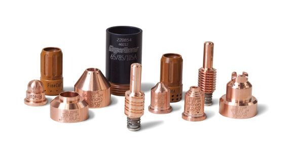
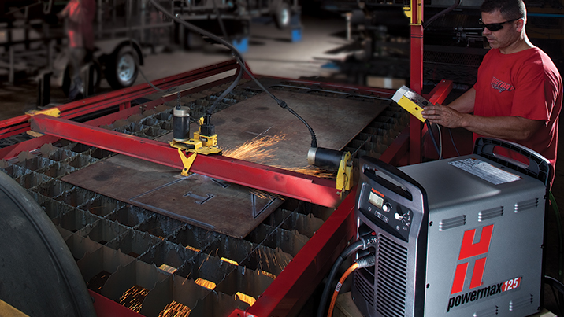
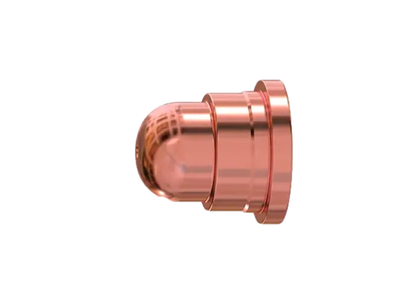
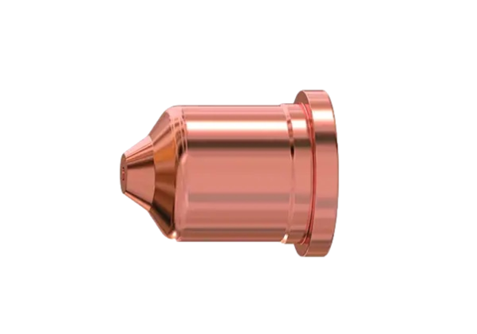
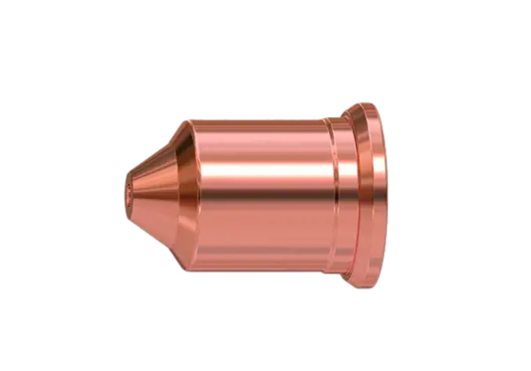
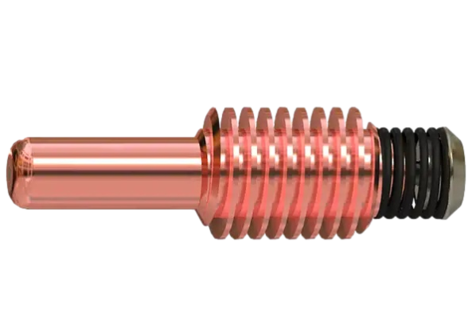
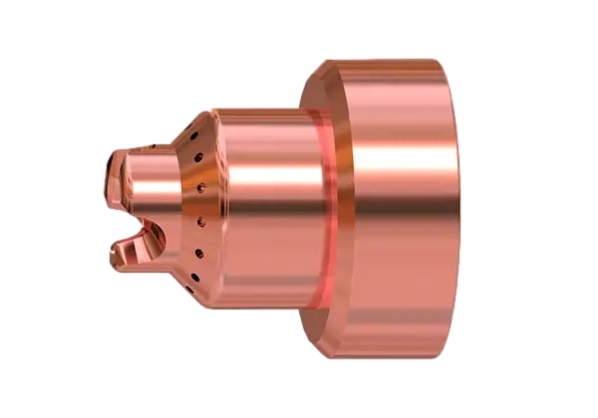
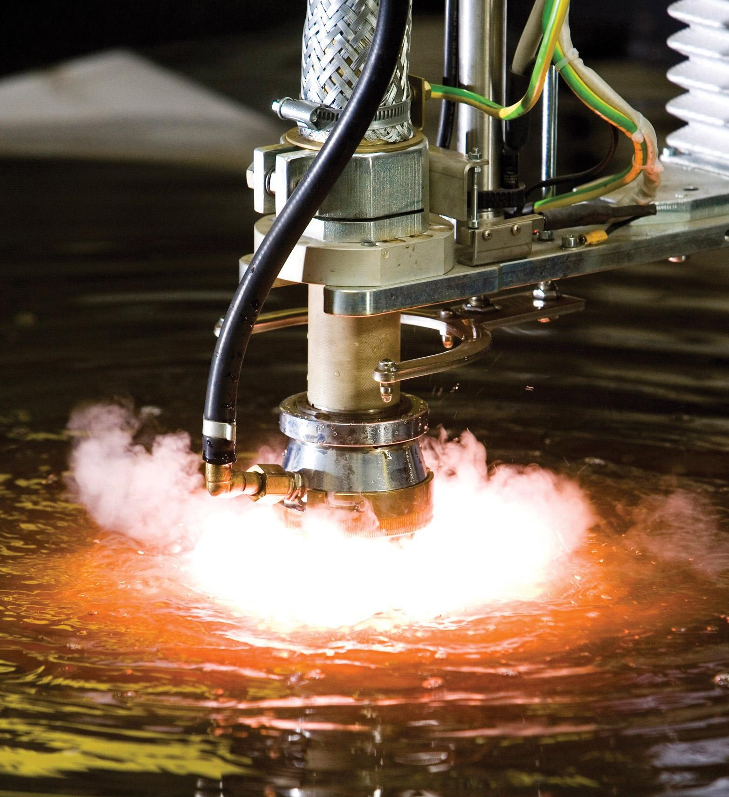

¿Necesitas Consumibles?
Por la compra de nuestros consumibles te damos asesoría telefonica técnica gratuita en corte plasma y mesas CNC

El mejor servicio
Después de muchos años trabajando en la industria metalmecánica con equipos y mesas de corte plasma, consideramos que somos los mejores asesorando a nuestros clientes. Además, tenemos claro que si nuestros clientes crecen, nosotros creceremos con ellos.
Conociendo la industria, sabemos que hoy, muchos operarios a pesar de tener los mejores equipos de corte plasma, no cortan de manera adecuada perdiendo dinero en el proceso de corte. Por lo anterior, hemos tomado la decisión de ofrecer el servicio de asesoría técnica telefónica gratuita a nuestros clientes de consumibles.


Boquilla FineCut
Codigo # 220930
Precio COP 20.000
Es fácil de reconocer porque su punta es circular. Esta boquilla puede utilizarse con 30 a 45 amperios según lo que indique la tabla de corte. La tecnología FineCut se utiliza para realizar cortes en espesores de lámina menores a 4 mm preferiblemente. Para lograr un gran acabado se debe utilizar una mesa de corte rápida, estable y sin vibraciones. Además, se recomienda cortar en tanque de agua o incluso debajo del agua para evitar deformaciones de lámina por el calor del plasma.
Boquilla 45A
Codigo # 220941
Precio COP 20.000
La boquilla de 45 amperios es la más utilizada en la industria, pues puede ser utilizada por toda la gama de equipos Powermax (45, 65, 85 y 105) pero siempre ajustando solo 45 amperios con la perilla de amperaje del equipo. Además, esta boquilla se puede utilizar tanto para cortes manuales como para cortes mecanizados.
Si bien la boquilla puede cortar hasta 20 mm desde el borde y 12 mm realizando perforación, sus espesores recomendados son de 3 hasta 10 mm (el centro de la tabla de corte en donde se presenta la mejor calidad de corte)

Boquilla 65A
Codigo # 220819
Precio COP 20.000
La boquilla de 65 amperios puede ser utilizada por los equipos Powermax 65, 85 y 105 siempre y cuando se ajusten solo 65 amperios con la perilla de amperaje del equipo. Además, esta boquilla se puede utilizar tanto para cortes manuales como para cortes mecanizados.
Si bien la boquilla puede cortar hasta 25 mm desde el borde y 16 mm realizando perforación, sus espesores recomendados son de 4 hasta 12 mm (el centro de la tabla de corte en donde se presenta la mejor calidad de corte)
Boquilla 85A
Codigo # 220816
Precio COP 20.000
La boquilla de 85 amperios puede ser utilizada los equipos Powermax 85 y 105, siempre y cuando se ajuste a 85 amperios la perilla de amperaje del equipo. Además, esta boquilla se puede utilizar tanto para cortes manuales como para cortes mecanizados.
Si bien la boquilla puede cortar hasta 30 mm desde el borde y 20 mm realizando perforación, sus espesores más recomendados son de 4 hasta 16 mm (el centro de la tabla de corte en donde se presenta la mejor calidad de corte)

Boquilla 105A
Codigo # 220990
Precio COP 20.000
Tener siempre mucho cuidado con esta boquilla, pues al ser parecida a las otras se suele utilizar con los consumibles inadecuados. Cuando se utiliza esta boquilla se debe cambiar el escudo de la antorcha por un escudo de 105 amperios. Se debe revisar muy bien las referencias para el corte de 105 amperios.
La boquilla de 105 amperios puede ser utilizada por los equipos Powermax 105 siempre y cuando se ajusten solo 105 amperios utilizando la perilla de amperaje del equipo. Además, esta boquilla se puede utilizar tanto para cortes manuales como para cortes mecanizados.
Si bien la boquilla puede cortar hasta 40 mm desde el borde y 20 mm realizando perforación, sus espesores recomendados son desde los 8 hasta los 16 mm (el centro de la tabla de corte en donde se presenta la mejor calidad de corte)
Electrodo 10 - 105A
Codigo # 220842
Precio COP 28.000
El electrodo sirve para todos los amperajes de equipos Powermax, se utiliza con consumibles FineCut y con consumibles 45, 65, 85 y 105 amperios. Solo existe un electrodo para antorchas Duramax y es el que se muestra en esta sección (Codigo # 220842). También se utiliza el mismo electrodo en cortes manuales y mecanizados.
El espesor de corte no depende del electrodo, solo de la boquilla y el amperaje que se utilice en el equipo de corte. El electrodo tiene un resorte que sirve para realizar el inicio del arco y contiene también una punta de hafnio. Cuando la punta de hafnio se desgasta en un milímetro de profundidad, el electrodo debe cambiarse. La vida útil del electrodo es de aproximadamente 400 inicios de arco.


Escudo de arrastre 15-85A
Codigo # 220818
Precio COP 40.000
El escudo de arrastre se utiliza para cortes manuales. El escudo está diseñado para ser arrastrado por la lámina mientras se realiza el corte. Para realizar perforaciones en la lámina, se recomienda inclinar la antorcha un poco y después de la perforación, enderezar la antorcha y continuar con el corte. Tener mucho cuidado que este escudo no sirve para la boquilla de 105 amperios.
Alíate con los Expertos
La experiencia y la capacitación nos ha formado
Somos expertos, capacitados directamente por Hypertherm en máquinas Powermax y MaxPro200. Nos capacitamos en la sede de Hypertherm de Guarulhos - Brasil. Construimos las mesas de corte Practicut y conocemos qué es lo mejor según tu industria y línea de producción.
Recuerda que el proceso de corte plasma es más económico que el corte con oxígeno solo si se utiliza de manera adecuada. Capacitamos a su personal para que no cometa errores y corte de forma óptima evitando sobrecostos en la producción.

Tu Pedido
Total items: 0